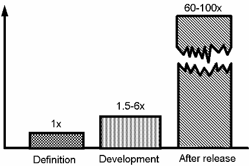
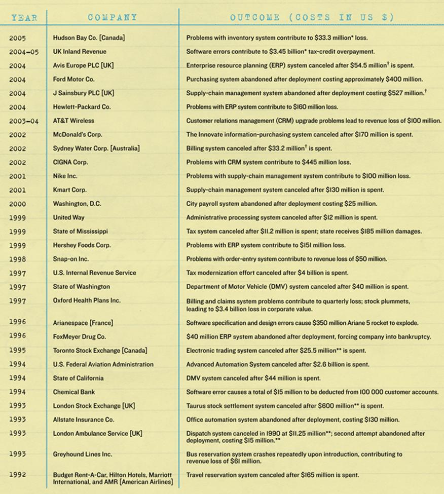
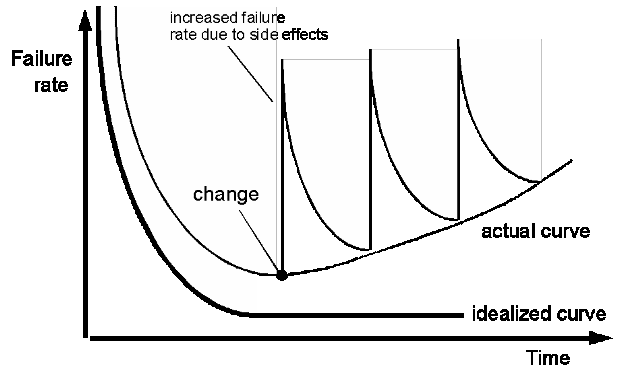
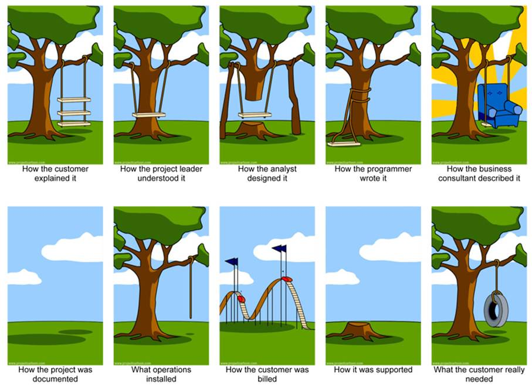

|
Introduction
to Software Engineering |
|
Lecture 1: Introduction |
Adapted from:
Chap 1. Sommerville 9th ed.
Chap 1. Pressman 6th ed.
The Software Product
·
What is Software?
o Software
is a set of items or objects that form a "configuration" that includes:
Programs, documents, data ...
·
Who Creates Software? Software Engineers
·
Why is Software Important? Affects nearly every aspect of
life.
·
How is Software Built? By applying a structured
process.
·
What are the Work Products? Programs, documents, data
·
Dual Role of Software
o Product
o Process
that delivers products
Software Characteristics
·
software is engineered
·
software doesn’t wear
out
·
software is complex
·
software is like an
‘aging factory’
Software economy
·
More and more systems are
software controlled
·
The economies of ALL
developed nations are
dependent on software.
·
Expenditure on software
represents a significant fraction of the GNP in all developed countries.
o Gartner Group Reports (2007): $3 Trillion on IT Worldwide (6% of
GDP).
Software costs
·
Software errors cost the
U.S. economy $60 billion annually in rework, lost productivity, and actual
damages.
·
Software costs often
dominate computer system costs.
·
Software costs more to
maintain than to develop.
·
For systems with a long
life, maintenance costs may be several times development costs.

Software Size
|
Program/Application |
Lines of Code |
|
Solaris |
7,400,000 |
|
Netscape |
17 million |
|
Space Station |
40 million |
|
Space Shuttle |
10 million |
|
Boeing 777 |
7 million |
|
Windows 95 |
Under 5 million |
|
Linux |
1.5 million |
Software Size Categories
|
Category |
Programmers |
Duration |
Size (Lines of Code) |
|
||||
|
Extremely Large |
> 200 |
> 6 years |
> 1,000,000 |
|
||||
|
Very Large |
20 - 200 |
3 - 6 years |
100,000 - 1,000,000 |
|
||||
|
Large |
5 - 20 |
2 - 3 years |
20,000 - 100,000 |
|
||||
|
Medium |
2 - 5 |
6 months – 2 years |
3,000 – 20,000 |
|
||||
|
Small |
1 - 2 |
1 - 6 months |
500 - 3,000 |
||||
|
Trivial |
1 |
1 - 4 weeks |
< 500 |
||||
Software Disasters
Case Studies
of Most Common and Severe Types of Software System Failure
· Medical Machine Kills (1985), Cost: Three people dead, three people critically injured
o Disaster: Canada’s Therac-25 radiation therapy machine malfunctioned and delivered lethal radiation doses to patients.
o Cause: Because of a subtle bug called a race condition, a technician could accidentally configure Therac-25 so the electron beam would fire in high-power mode without the proper patient shielding.
· Patriot Fails Soldiers (1991), Cost: 28 soldiers dead, 100 injured
o Disaster: During the first Gulf War, an American Patriot Missile system in Saudi Arabia failed to intercept an incoming Iraqi Scud missile. The missile destroyed an American Army barracks.
o Cause: A software rounding error incorrectly calculated the time, causing the Patriot system to ignore the incoming Scud missile.
· Ariane Rocket Goes Boom (1996), Cost: $500 million
o Disaster: Ariane 5, Europe’s newest unmanned rocket, was intentionally destroyed seconds after launch on its maiden flight. Also destroyed was its cargo of four scientific satellites to study how the Earth’s magnetic field interacts with solar winds.
o Cause: Shutdown occurred when the guidance computer tried to convert the sideways rocket velocity from 64-bits to a 16-bit format. The number was too big, and an overflow error resulted. When the guidance system shut down, control passed to an identical redundant unit, which also failed because it was running the same algorithm.
· Mars Climate Crasher (1998), Cost: $125 million
o Disaster: After a 286-day journey from Earth, the Mars Climate Orbiter fired its engines to push into orbit around Mars. The engines fired, but the spacecraft fell too far into the planet’s atmosphere, likely causing it to crash on Mars.
o Cause: The software that controlled the Orbiter thrusters used imperial units (pounds of force), rather than metric units (Newtons) as specified by NASA.
General Project Failures

Why
Software Projects Fails
http://spectrum.ieee.org/computing/software/why-software-fails
Among the most common factors:
·
Unrealistic or unarticulated project
goals
·
Inaccurate estimates of needed
resources
·
Badly defined system requirements
·
Poor reporting of the project's status
·
Unmanaged risks
·
Poor communication among customers,
developers, and users
·
Use of immature technology
·
Inability to handle the project's
complexity
·
Sloppy development practices
·
Poor project management
·
Stakeholder politics
·
Commercial pressures
So What Does All This Mean?
· Seat of your pants programming will not work!
· Urgent need for techniques that can be used to manage the development of large software systems
· This is part of what software engineering is all about
Frequently asked questions about software engineering
|
Question |
Answer |
|
What is software? |
Computer programs and associated documentation. Software products may be developed for a particular customer or may be developed for a general market. |
|
What are the attributes of good software? |
Good software should deliver the required functionality and performance to the user and should be maintainable, dependable and usable. |
|
What is software engineering? |
Software engineering is an engineering discipline that is concerned with all aspects of software production. |
|
What are the fundamental software engineering activities? |
Software specification, software development, software validation and software evolution. |
|
What is the difference between software engineering and computer science? |
Computer science focuses on theory and fundamentals; software engineering is concerned with the practicalities of developing and delivering useful software. |
|
What is the difference between software engineering and system engineering? |
System engineering is concerned with all aspects of computer-based systems development including hardware, software and process engineering. Software engineering is part of this more general process. |
|
What are the costs of software engineering? |
Roughly 60% of software costs are development costs, 40% are testing costs. For custom software, evolution costs often exceed development costs. |
|
What are the costs of software engineering? |
Roughly 60% of software costs are development costs, 40% are testing costs. For custom software, evolution costs often exceed development costs. |
|
What are the best software engineering techniques and methods? |
While all software projects have to be professionally managed and developed, different techniques are appropriate for different types of system. For example, games should always be developed using a series of prototypes whereas safety critical control systems require a complete and analyzable specification to be developed. You can’t, therefore, say that one method is better than another. |
|
What differences has the web made to software engineering? |
The web has led to the availability of software services and the possibility of developing highly distributed service-based systems. Web-based systems development has led to important advances in programming languages and software reuse. |
Essential attributes of good software
|
Product characteristic |
Description |
|
Maintainability |
Software should be written in such a way so that it can evolve to meet the changing needs of customers. This is a critical attribute because software change is an inevitable requirement of a changing business environment. |
|
Dependability and security |
Software dependability includes a range of characteristics including reliability, security and safety. Dependable software should not cause physical or economic damage in the event of system failure. Malicious users should not be able to access or damage the system. |
|
Efficiency |
Software should not make wasteful use of system resources such as memory and processor cycles. Efficiency therefore includes responsiveness, processing time, memory utilization, etc. |
|
Acceptability |
Software must be acceptable to the type of users for which it is designed. This means that it must be understandable, usable and compatible with other systems that they use. |
Questions Asked of Software Engineers
·
Why does it take so long
to finish software?
·
Why are development
costs so high?
·
Why can’t we find all
the bugs before delivery?
·
Why do we continue to
have difficulties measuring progress in the software development process?

Software engineering
· Software Engineering Definition:
· The establishment and use of sound engineering principles in order to economically obtain software that is reliable and works efficiently on real machines.
(1) The application of a systematic, disciplined, quantifiable approach to the development, operation, and maintenance of software; that is, the application of engineering to software.
(2)The study of approaches, as in (1).
Importance of software engineering
·
Individuals and society rely on advanced software systems.
o We need
to be able to produce reliable and trustworthy systems economically and
quickly.
·
It is usually cheaper to use software engineering methods and
techniques for software systems rather than just write the programs as if it
was a personal programming project.
o For
most types of system, the majority of costs are the costs of changing the
software after it has gone into use.
Software process activities
·
Software specification,
where customers and engineers define the software that is to be produced and
the constraints on its operation.
·
Software development, where the software is designed and programmed.
·
Software validation, where the software is checked to ensure that it is what the
customer requires.
·
Software evolution, where the software is modified to reflect changing customer
and market requirements.
General
issues that affect most software
·
Heterogeneity
o Increasingly, systems are required to operate as
distributed systems across networks that include different types of computer
and mobile devices.
·
Business
and social change
o Business and society are changing incredibly quickly
as emerging economies develop and new technologies become available. They need
to be able to change their existing software and to rapidly develop new
software.
·
Security
and trust
o As software is intertwined with all aspects of our
lives, it is essential that we can trust that software.
Software
engineering diversity
·
There are many different types of
software systems and there is no universal set of software techniques that is
applicable to all of these.
·
The software engineering methods and
tools used depend on the type of application being developed, the requirements
of the customer and the background of the development team.
Software
Applications
· system
software
· real-time
software
· business
software
· engineering/scientific
software
· embedded
software
· PC
software
· mobile
software
· games
and simulations
· WebApps
(Web applications)
Software
engineering fundamentals
Some
fundamental principles apply to all types of software system, irrespective of
the development techniques used:
§ Systems
should be developed using a managed and understood development process.
§ Dependability
and performance are important for all types of system.
§ Understanding
and managing the software specification and requirements (what the software
should do) are important.
§ Where
appropriate, you should reuse software that has already been developed rather
than write new software.
Software
engineering and the web
· The
Web is now a platform for running application and organizations are
increasingly developing web-based systems rather than local systems.
· Web
services allow application functionality to be accessed over the web.
· Web-based
systems are complex distributed systems, but the fundamental principles of
software engineering are as applicable to them as they are to any other types
of systems.
Web
software engineering
·
Software reuse
is the dominant approach for constructing web-based systems.
§ When
building these systems, you think about how you can assemble them from
pre-existing software components and systems.
·
Web-based
systems should be developed and delivered incrementally.
§ It
is now generally recognized that it is impractical to specify all the
requirements for such systems in advance.
·
User interfaces
are constrained by the capabilities of web browsers.
§ Technologies
such as AJAX allow rich interfaces to be created within a web browser but are
still difficult to use. Web forms with local scripting are more commonly used.
Key
points
· Software engineering is an engineering discipline that
is concerned with all aspects of software production.
· Essential software product attributes are
maintainability, dependability and security, efficiency and acceptability.
· The high-level activities of specification,
development, validation and evolution are part of all software processes.
· The fundamental notions of software engineering are
universally applicable to all types of system development.
· There are many different types of system and each
requires appropriate software engineering tools and techniques for their
development.
· The fundamental ideas of software engineering are
applicable to all types of software system.
